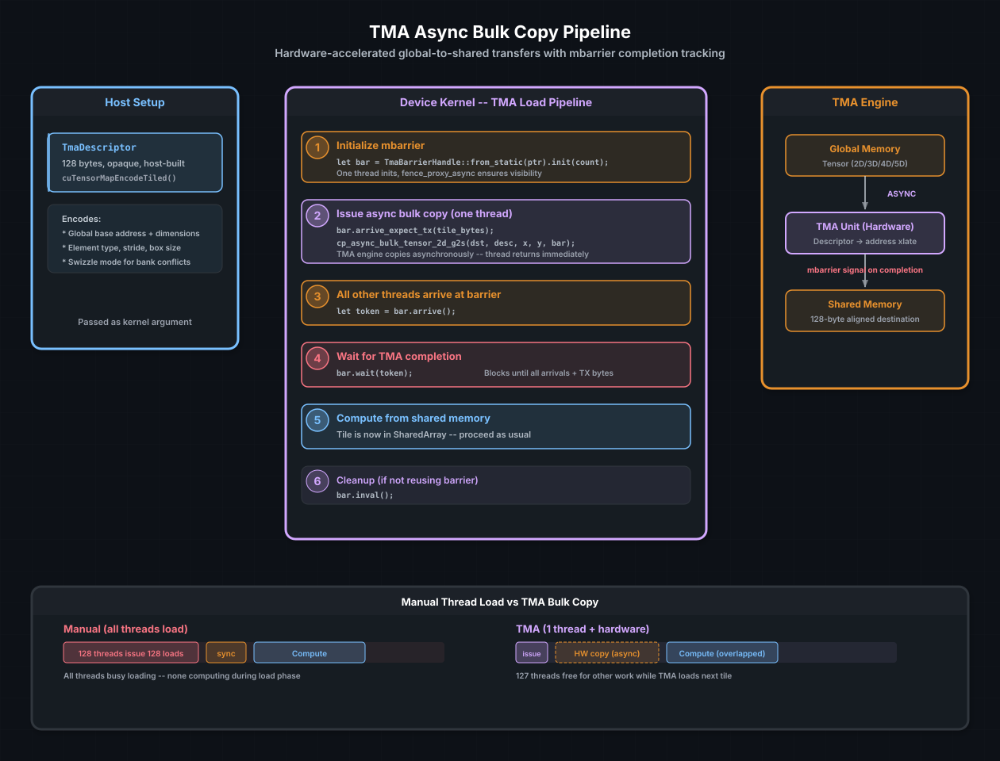

Tensor Memory Accelerator (TMA)#
Starting with the Hopper architecture (SM 90), NVIDIA GPUs include a dedicated hardware unit — the Tensor Memory Accelerator — that moves data between global and shared memory without occupying thread execution resources. Instead of every thread in a block issuing its own load instruction, a single thread hands a descriptor to the TMA engine, and the hardware performs the entire transfer asynchronously. The other 127 threads are free to compute, load other data, or simply wait at a barrier.
cuda-oxide exposes TMA through TmaDescriptor, the cp_async_bulk_tensor_*
family, and the ManagedBarrier typestate API. This chapter covers the
setup, the copy patterns, and how TMA integrates with barriers to build
efficient load/compute pipelines.
Ver también
CUDA Programming Guide — Asynchronous Data Copies using TMA for a complete description of the hardware unit, swizzle modes, and supported tensor dimensions.
The problem TMA solves#
In the Shared Memory chapter, every thread in the block participates in loading a tile from global memory:
TILE_A[ty * TILE + tx] = a[row * k + tile_offset + tx];
This works, but it means all 128 (or 256, or 1024) threads in the block spend time computing addresses and issuing load instructions. For large tiles, the load phase can dominate the kernel’s runtime.
TMA replaces the per-thread load loop with a single hardware instruction. One thread says «copy this 2D region from global to shared,» and the TMA engine handles the rest — including address computation, stride handling, and bank-conflict-free swizzled writes.
{kind=link}

TMA async bulk copy pipeline. The host builds a TmaDescriptor encoding
the tensor’s layout. On the device, one thread issues the copy and all
threads wait on an mbarrier. The TMA engine performs the transfer
asynchronously, signals the barrier on completion, and threads proceed to
compute from shared memory.#
TmaDescriptor — the tensor map#
A TmaDescriptor is a 128-byte opaque struct that encodes everything the
TMA engine needs to know about a tensor: base address, dimensions, element
type, stride, and swizzle mode. It is built on the host using the CUDA
driver API:
use cuda_device::tma::TmaDescriptor;
// On the host (simplified — the real call has many parameters)
unsafe {
cuTensorMapEncodeTiled(
&mut desc as *mut TmaDescriptor as *mut _,
CU_TENSOR_MAP_DATA_TYPE_FLOAT32,
2, // 2D tensor
global_ptr, // base address in global memory
&dims, // [rows, cols]
&strides, // byte strides per dimension
&box_dims, // tile size per copy
&elem_strides, // element strides within a box
CU_TENSOR_MAP_INTERLEAVE_NONE,
CU_TENSOR_MAP_SWIZZLE_128B, // bank-conflict-free swizzle
CU_TENSOR_MAP_L2_PROMOTION_L2_128B,
CU_TENSOR_MAP_FLOAT_OOB_FILL_NONE,
);
}
The descriptor is then passed to the kernel as a regular argument. On the
device, it is treated as *const TmaDescriptor — opaque, read-only, and
always valid for the lifetime of the allocation it describes.
Truco
The swizzle mode is the most performance-critical parameter.
SWIZZLE_128B rearranges the byte layout in shared memory so that 128-byte
accesses from different warps hit different banks. Without swizzling, naive
2D tile loads often produce bank conflicts.
The mbarrier dance#
TMA completion tracking relies on ManagedBarrier (or the raw mbarrier_*
functions). The typestate API enforces the lifecycle at the type level:
use cuda_device::barrier::{Barrier, ManagedBarrier, TmaBarrierHandle, Uninit, Ready};
use cuda_device::SharedArray;
#[kernel]
pub fn tma_load_kernel(desc: *const TmaDescriptor) {
static mut BAR: SharedArray<Barrier, 1, 128> = SharedArray::UNINIT;
let bar: TmaBarrierHandle<Ready> = unsafe {
TmaBarrierHandle::<Uninit>::from_static(BAR.as_mut_ptr())
.init_by(block_size, 0) // thread 0 inits, includes fence + sync
};
// Issue TMA copy
if thread::threadIdx_x() == 0 {
let token = bar.arrive_expect_tx(TILE_BYTES as u32);
unsafe {
cp_async_bulk_tensor_2d_g2s(
smem_ptr, desc, tile_x, tile_y, bar.as_ptr() as *mut _
);
}
bar.wait(token);
} else {
let token = bar.arrive();
bar.wait(token);
}
// Shared memory now contains the tile — safe to read
// ...
unsafe { bar.inval(); }
}
The lifecycle is: Uninit → init() → Ready → arrive() / wait() →
inval() → Invalidated. The type system prevents calling wait on an
uninitialized barrier or arrive on an invalidated one.
Key barrier rules#
Rule |
Why |
|---|---|
|
TMA engine needs to see the initialized barrier in shared memory |
|
The barrier must know the expected byte count before the engine starts writing |
All threads must arrive (or be accounted for) |
Barrier trips on |
|
Releases the barrier hardware resource |
Alignment requirements#
TMA destinations in shared memory must be 128-byte aligned. cuda-oxide
provides this through the ALIGN parameter on SharedArray and
DynamicSharedArray:
static mut TILE: SharedArray<f32, 1024, 128> = SharedArray::UNINIT;
// Or with dynamic shared memory:
let dst: *mut u8 = DynamicSharedArray::<u8, 128>::get();
If the destination is not 128-byte aligned, the TMA engine will silently produce incorrect results or fault. There is no runtime check — the alignment must be correct by construction.
Multicast variants#
On Hopper+ with clusters enabled, TMA can multicast a single global load into the shared memory of multiple CTAs simultaneously:
use cuda_device::tma::cp_async_bulk_tensor_2d_g2s_multicast;
unsafe {
cp_async_bulk_tensor_2d_g2s_multicast(
dst, desc, x, y, bar_ptr,
cta_mask, // u16 bitmask of target CTAs in the cluster
);
}
This is particularly useful for GEMM-style kernels where the same tile of A or B is needed by multiple thread blocks. Instead of each block loading its own copy, one TMA operation serves all of them.
Ver también
Cluster Programming for the full cluster model and distributed shared memory, which pairs naturally with TMA multicast.
TMA vs. manual loads#
Property |
Manual thread loads |
TMA bulk copy |
|---|---|---|
Threads required |
All threads in block |
1 thread issues; hardware executes |
Address computation |
Per-thread (index math) |
Encoded in descriptor |
Swizzle for bank conflicts |
Manual padding |
Descriptor-level swizzle mode |
Completion tracking |
|
|
Overlap with compute |
Not possible (threads are loading) |
Compute on previous tile while loading next |
Minimum architecture |
Any CUDA GPU |
Hopper (SM 90+) |
The key advantage is not raw bandwidth — TMA and manual loads can achieve similar peak throughput. The advantage is thread utilization: while TMA loads the next tile, all threads can compute on the current one. This enables the multi-stage software pipeline pattern that modern GEMM implementations rely on.
Ver también
Shared Memory and Synchronization — the manual load pattern that TMA replaces
Matrix Multiply Accelerators — where TMA feeds the tensor cores